Инвесторам
Архитектурно-градостроительная концепция участка на ул. Ленской, разработанная бюро «АРХИГРУП». Показатели, объёмно-планировочное решение и то, что из этого следует для вложений.
Все цифры на этой странице — из концепции в редакции 3 сентября 2026 года. Они уточняются на стадии проектной документации.
Как это выглядит
Четырёхэтажные кварталы с приватными дворами, коммерцией на первых этажах и террасами, обращёнными к Каме.
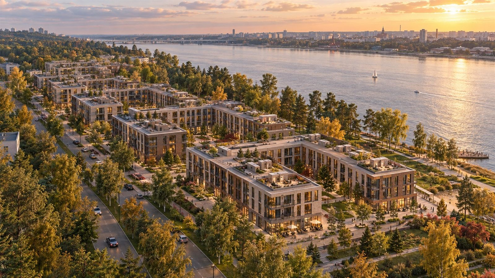
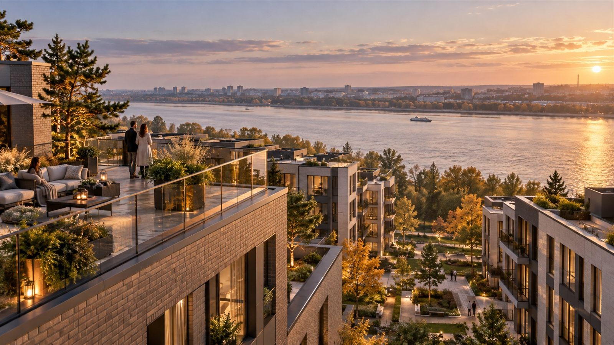
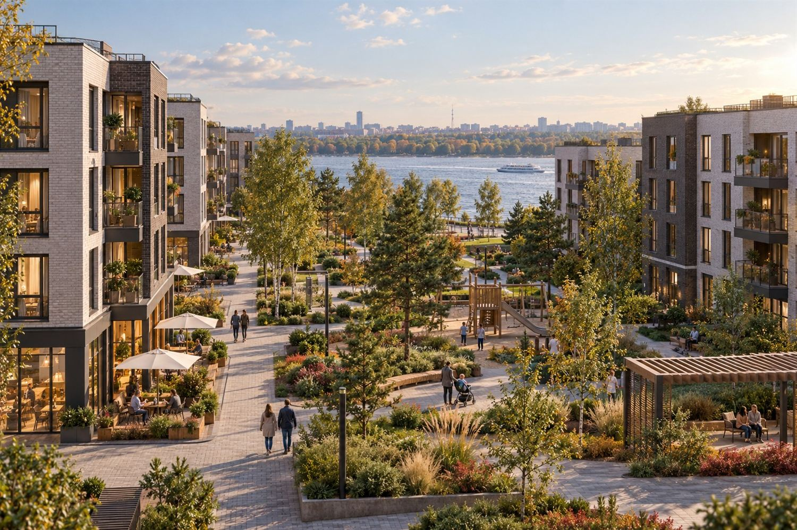
Технико-экономические показатели
Проектируемый участок, редакция от 03.09.2026.
Объёмно-планировочное решение
Из двух проработанных вариантов принят первый: чёткая планировочная структура, приватные дворы, рациональное использование территории.
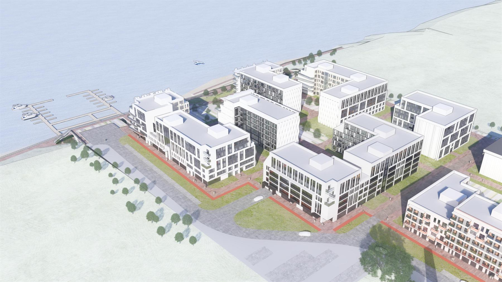
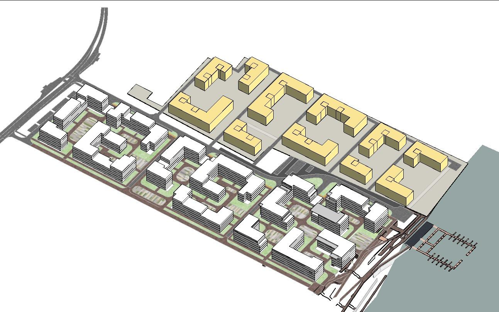
Достоинства принятого варианта
- — Сочетание чётких линий и комфортной этажности
- — Повторение контуров окружающей застройки в планировке
- — Дома правильной геометрической формы
- — Приватность и безопасность территории
- — Чёткое разделение общественных и дворовых пространств
Что учтено как риск
- — Возможная монотонность территории
- — Риск недостаточной инсоляции — проверен расчётом
Второй вариант с центральной осью давал визуальную открытость, но проигрывал по приватности дворов, безопасности и ориентации части корпусов.
Инсоляция и террасы
Расчёт инсоляции подтверждает выбранную посадку: дворы получают от шести до двенадцати часов освещения. Синие зоны на схеме — наиболее освещённые участки дворов.
Террасы размещены на кровлях и ориентированы к реке. Большинство квартир получает панорамный вид, а каждая терраса становится личной смотровой площадкой — приватное открытое пространство появляется без увеличения пятна застройки.
Для инвестора это означает прибавку к ликвидности верхних этажей без роста стоимости земли под зданием: 12 950 м² пятна на участке в 39 511 м².
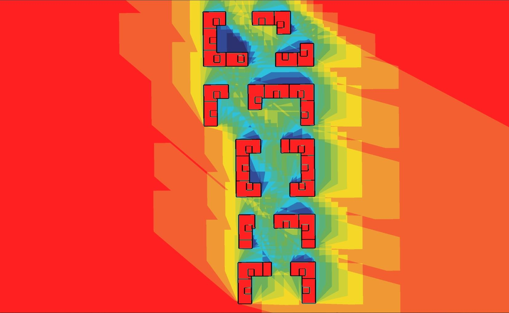
Схемы концепции
Аналитическая часть, на которой строилось объёмно-планировочное решение. Листы приведены из альбома «АРХИГРУП».
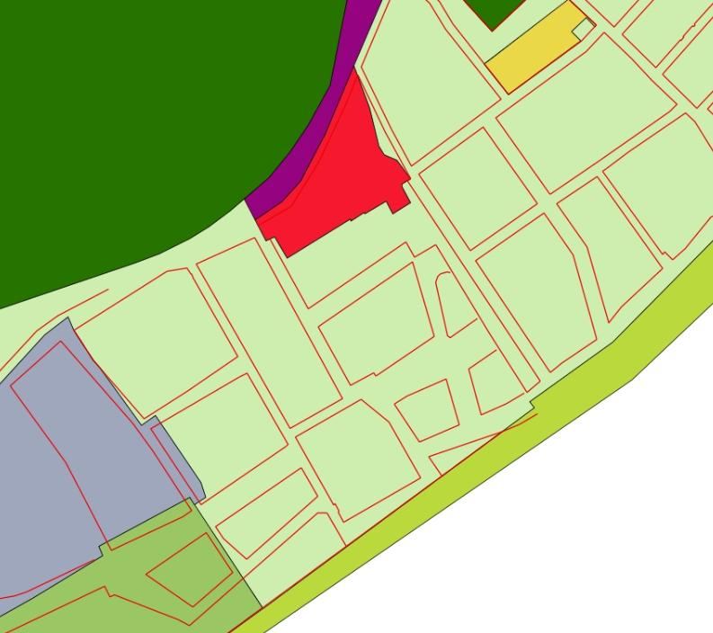
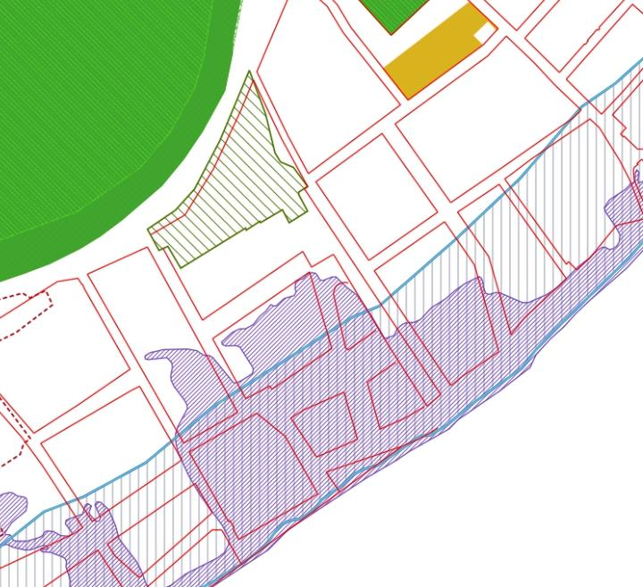
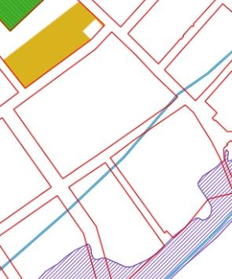
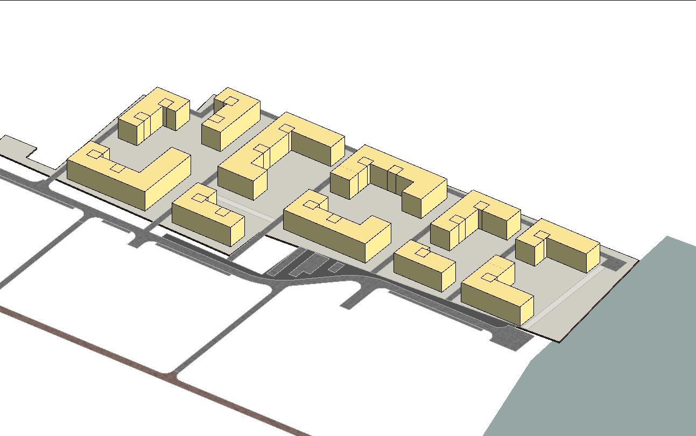
Место как оно есть
Фотофиксация участка и окружения из альбома концепции.
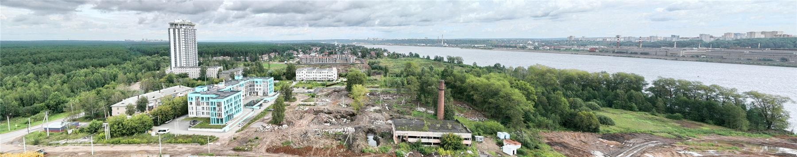
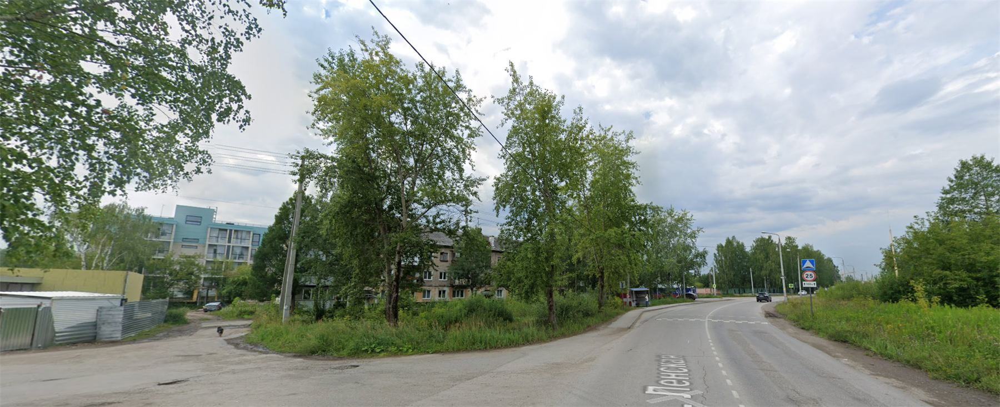
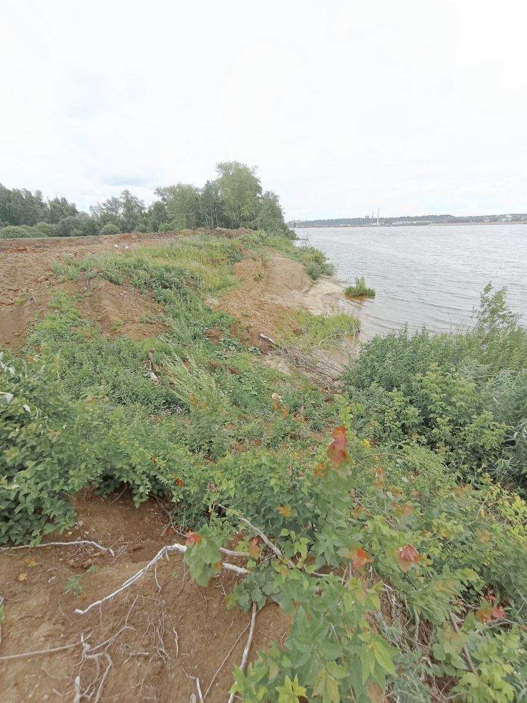
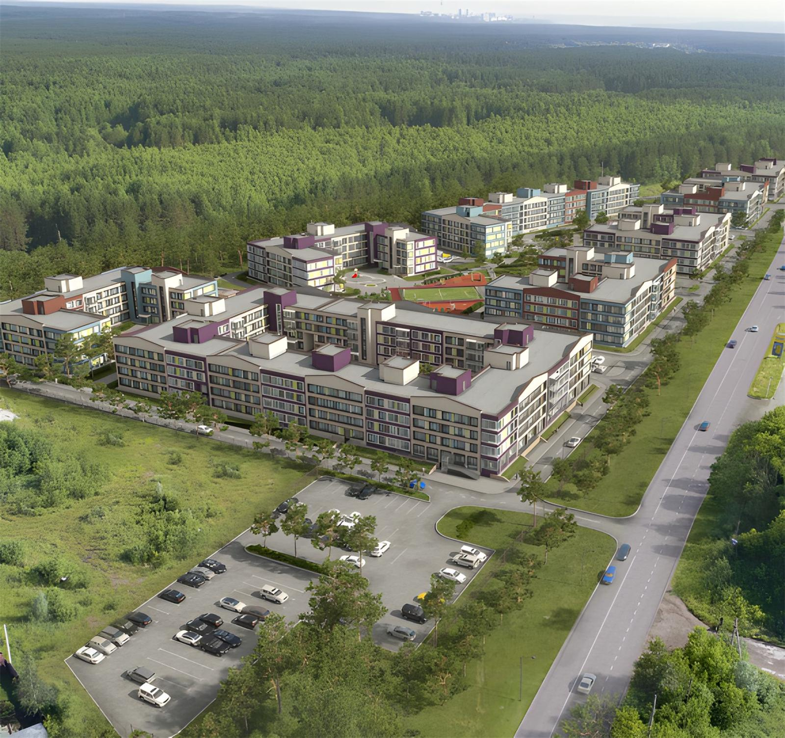
Что уже собрано
Площадка проработана: концепция, показатели, изыскания и первые технические условия получены. Это сокращает срок собственной проверки.
| Документ | Разработчик | Дата |
|---|---|---|
| Архитектурно-градостроительная концепция | ООО «АРХИГРУП» | 18.08.2026 |
| Технико-экономические показатели, действующая редакция | ООО «АРХИГРУП» | 03.09.2026 |
| Градостроительный план земельного участка и исходные данные | — | 2024, дополнено в 2026 |
| Инженерно-геологические изыскания | УралПроГео | 2025 |
| Топографическая съёмка М 1:500 | — | 2023 |
| Технические условия на газоснабжение | Газпром газораспределение Пермь | 25.05.2026 |
Материалы предоставляются по запросу при подготовке сделки. Состав и актуальность подтверждаются на дату обращения.
Правовая рамка
Территория в зоне Ж-6. Это определяет и сценарий с земельными участками, и сценарий с многоквартирной застройкой.
Основные виды — без согласований
- 2.1 Индивидуальное жилищное строительство
- 2.3 Блокированная жилая застройка
- 3.5.1 Дошкольное и школьное образование
- 5.1 Спорт · 5.1.5 Водный спорт
- 5.2.1 Туристическое обслуживание
- 9.2 Курортная · 9.2.1 Санаторная деятельность
Условно-разрешённые
Через публичные слушания.
- 2.1.1 Малоэтажная многоквартирная застройка
- 4.4 Магазины · 3.3 Бытовое обслуживание
- 3.4.1 Амбулаторно-поликлиническое обслуживание
Что это значит. Продажа участков под ИЖС и блокированную застройку идёт по основному виду использования. Концепция на 697 квартир — это сценарий условно-разрешённого вида, он требует отдельной процедуры.
Территория и подъезды
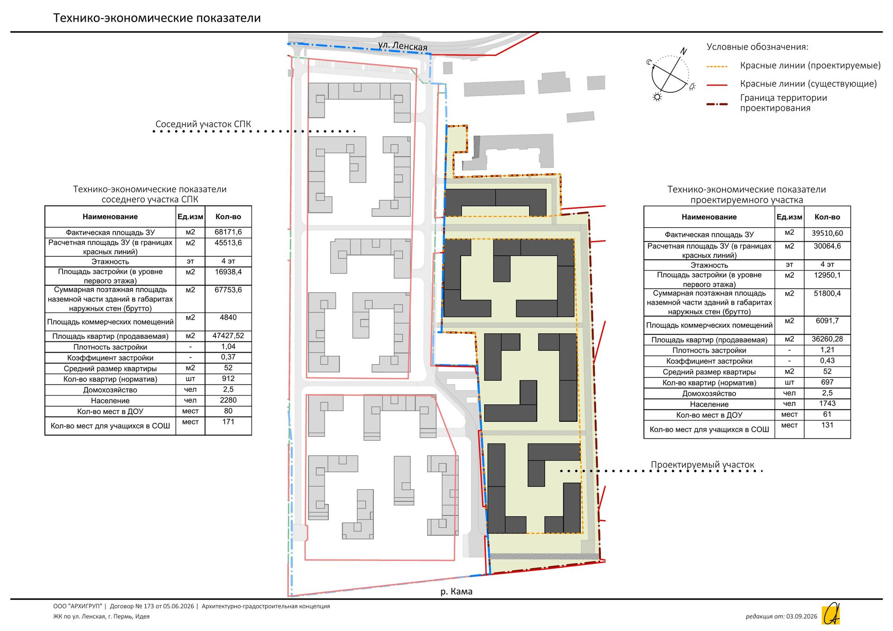
Что говорит концепция
Улица Ленская — улица районного значения по Генеральному плану Перми. Территория находится за пределами обслуживания рельсовым транспортом; радиус допустимой доступности до остановок общественного транспорта — 600 м.
Отмечена слабая транспортная проницаемость: в границах территории предусмотрены дополнительные транспортные и пешеходные связи. Профиль пешеходной улицы — не менее 11 м.
Зелёные коридоры формируют непрерывный пешеходный маршрут от лесного массива к набережной Камы, связывая застройку в единую систему общественных пространств.
Сравнение с соседним участком
Концепция содержит расчёт по соседнему участку СПК. Сравнение показывает, где проект плотнее, а где — свободнее.
| Показатель | Проектируемый | Соседний, СПК |
|---|---|---|
| Площадь участка, м² | 39 511 | 68 172 |
| В границах красных линий, м² | 30 065 | 45 514 |
| Этажность | 4 | 4 |
| Пятно застройки, м² | 12 950 | 16 938 |
| Поэтажная площадь брутто, м² | 51 800 | 67 754 |
| Коммерция, м² | 6 092 | 4 840 |
| Продаваемая площадь квартир, м² | 36 260 | 47 428 |
| Плотность застройки | 1,21 | 1,04 |
| Коэффициент застройки | 0,43 | 0,37 |
| Квартир | 697 | 912 |
| Население, чел. | 1 743 | 2 280 |
| Мест в ДОУ | 61 | 80 |
| Мест в школе | 131 | 171 |
Проект плотнее соседнего по застройке (1,21 против 1,04) и заметно больше отдаёт под коммерцию: 6 092 м² против 4 840 при меньшей площади участка.
Квартирография
Средняя площадь квартиры по концепции — 52 м². Ниже примеры планировочных решений этого диапазона.
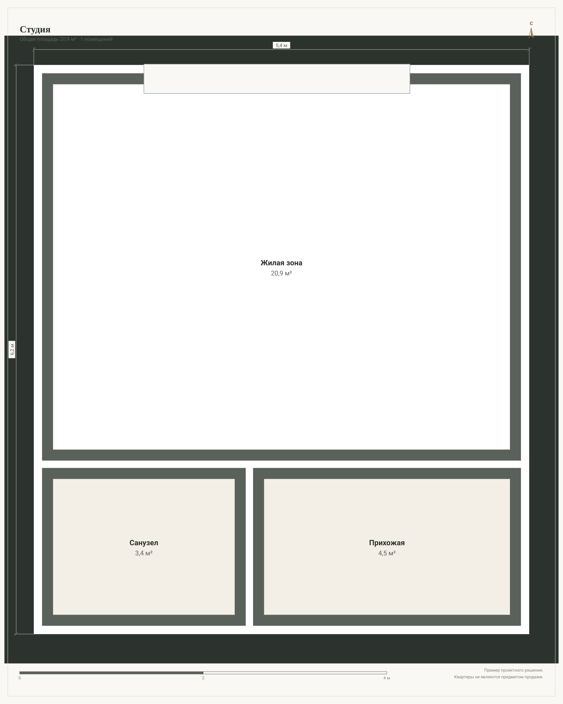
Студия
Единое пространство, кухонная зона у окна.
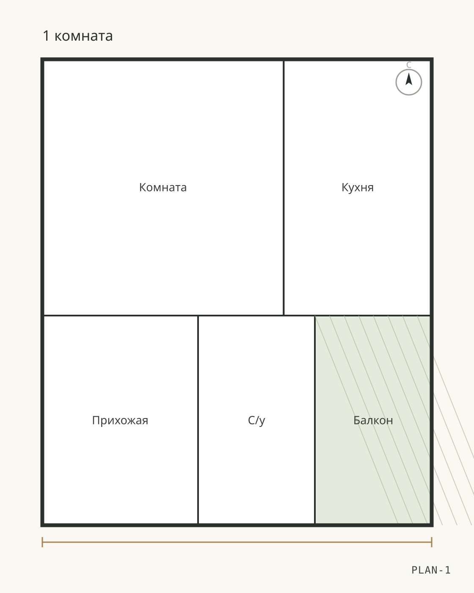
Одна комната
Спальня отделена, кухня-гостиная на балкон.

Две комнаты
Спальни разведены, общая зона по центру.
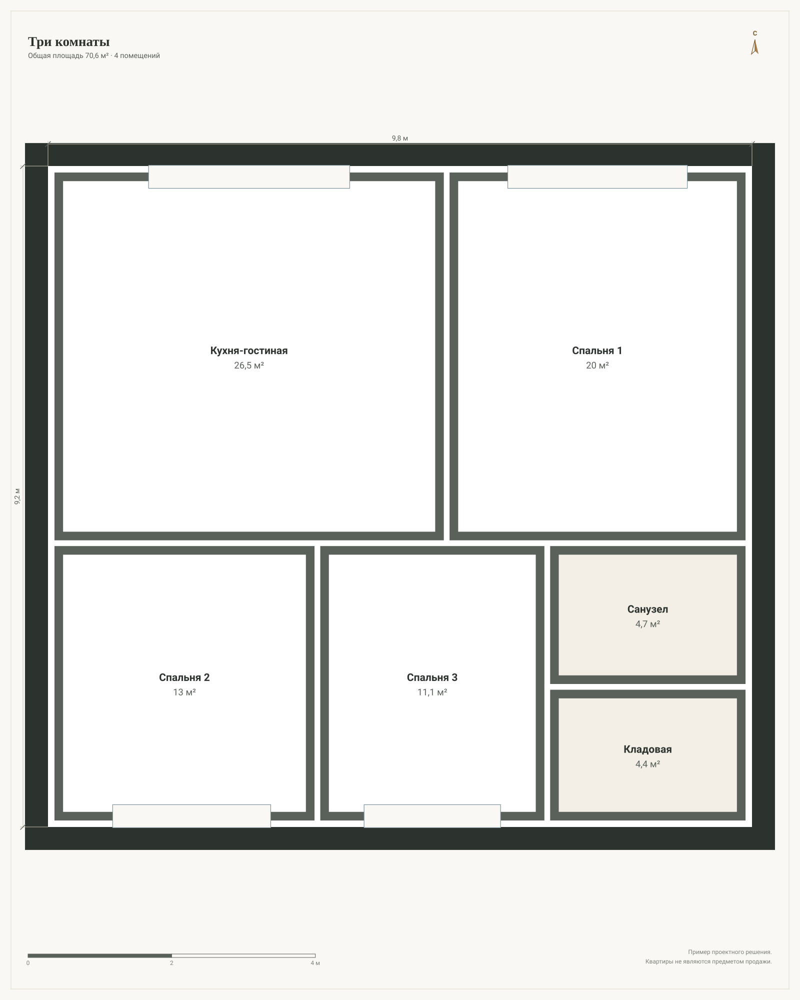
Три комнаты
Два санузла, кладовая, окна на две стороны.
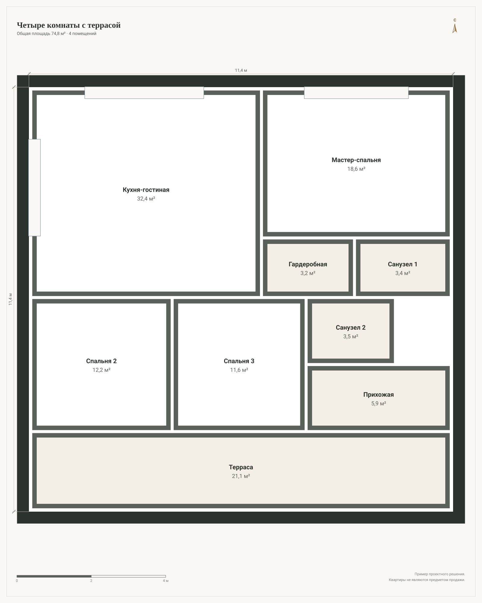
Четыре комнаты
Терраса на верхнем уровне, мастер-спальня.
Планировки — примеры проектных решений, а не обмеры конкретных квартир.
Получить материалы концепции
Пришлём альбом концепции, полный расчёт ТЭП и обсудим условия участия.
Разработчик концепции — ООО «АРХИГРУП», договор № 173 от 05.06.2026. Главный архитектор проекта О. А. Январских.